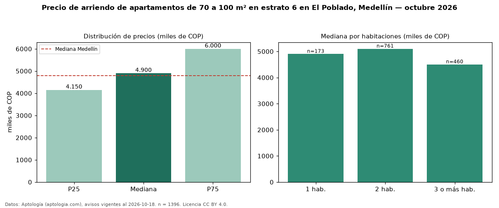

Precio de arriendo de apartamentos de 70 a 100 m² en estrato 6 en El Poblado, Medellín — octubre 2026
COP 4,90 millones al mes es el canon mediano de apartamentos de 70 a 100 m² en estrato 6 en arriendo en El Poblado, Medellín (n = 1.396 avisos). Eso es 21 % menos que la mediana de los apartamentos en estrato 6 en arriendo de El Poblado (COP 6,20 millones, n = 5.175); este segmento reúne el 27 % de esos avisos. Por metro cuadrado, la mediana es COP 57.911/m² al mes (n = 1360), 7 % por encima de los apartamentos en estrato 6 en arriendo de El Poblado (COP 54.167/m²). El área mediana anunciada es 85 m². El segmento con más oferta es el de 2 habitaciones (761 avisos, mediana COP 5,10 millones); pasar de 1 habitación a 3 o más habitaciones cambia la mediana −8 %. La administración mediana declarada es COP 548.500 al mes (n = 34), aparte del canon. La mediana de todos los apartamentos en arriendo de Medellín es COP 4,80 millones (+2 % de diferencia). 93 % de los avisos con el dato declara parqueadero. Datos: Aptología (aptologia.com), CC BY 4.0 — https://www.aptologia.com/arriendo/medellin/el-poblado. Archivos: PDF, CSV con las cifras y gráfica PNG.

| Avisos únicos | 1396 |
|---|---|
| Percentil 25 | COP 4.150.000 |
| Mediana | COP 4.900.000 |
| Percentil 75 | COP 6.000.000 |
| Mediana por m² | COP 57.910 |
Fuente: avisos vigentes de portales inmobiliarios recopilados por Aptología, deduplicados (mínimo 30 avisos únicos por celda). Precios pedidos, no cerrados. Fecha: 2026-10-18.